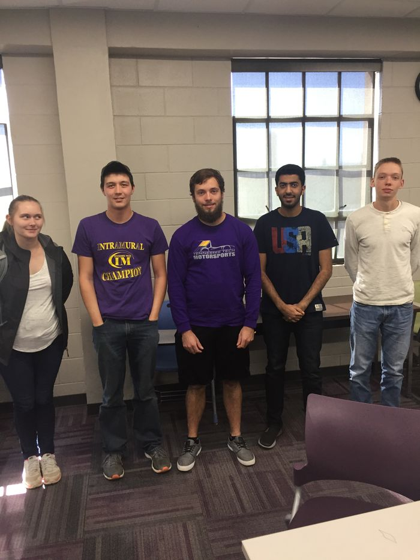
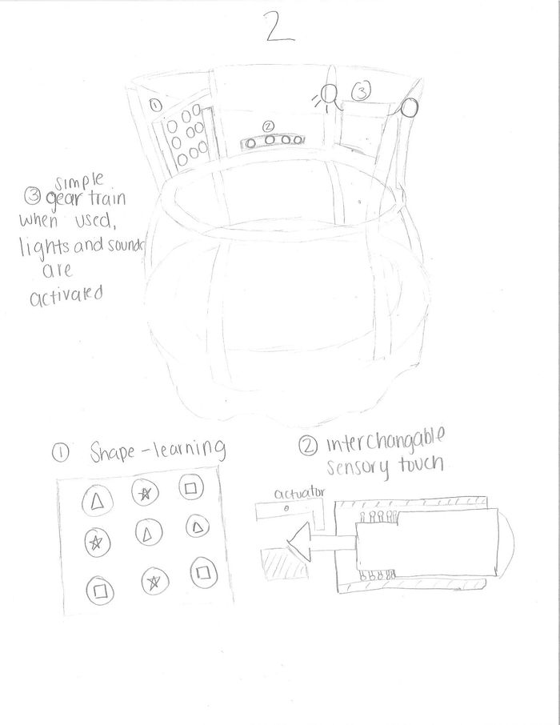
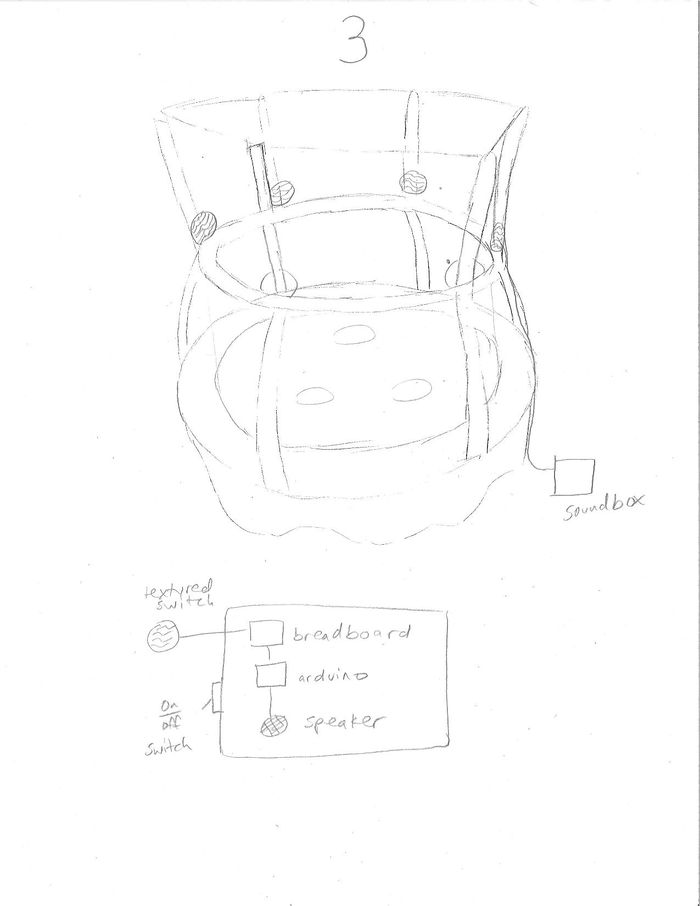

Sensory input device - jumping
Abstract
A three year old with autism enjoys jumping and would like to get sensory input while jumping.
Team members
Photo of team:

Team Names (left to right): Angel Feeler, William Haffner, Skyler Johnson, Abdulrahman Alsulaimani, Ethan Nichols
Acknowledge help of others
Problem Statement/overview of the need
A three year old with autism enjoys jumping and would like to get sensory input while jumping. She is currently using an old mattress to jump around on but her mother would like a fun, educational, and safe place for her to jump. Most of the trampolines on the market have minimal interaction.
Design Specifications
- tactile interaction
- not destructive to the house
- 5ft x 5ft space
- sensory input through touch and reactions
- fun and educational jumping space
- movable without excessive heavy lifting
Background research
The trampolines that are currently sold are not suited well for this famliy's needs. This trampoline is the most interactive we could find and the only interaction was a mat that plays sounds when you jump. We plan to address this by designing additions to the trampoline.
Conceptual Design
Our concepts consist of additions to a trampoline we plan on buying.
Design Concept 1
- fabric, felt, and velcro with textured letters for educational fun
- thermal color changing mat (thermochromatic ink)
Design Concept 2
learning shapes, and gear powered sound and lights

Design Concept 3
pressure pads with animal sounds and textures

Evaluate concepts/select candidate
| Pros | Cons | |
|---|---|---|
| Design 1 | educational | does not improve hand and eye coordination and only actives two senses: touch and sight |
| Design 2 | improves hand and eye coordination | does not associate touch with specific sounds |
| Design 3 | light interaction with touch interaction | does not have as many interactive elements |
Speaking with the physical therapist she suggested to not spread the game across the trampoline. Reviewing our concepts we decided to combine concept one and two because design three didn't add any educational value. Design one and two will teach numbers and letters which will meet the family's needs better.
Detailed Design
Description of selected design
Our design includes a 'whack-a-mole' game with foam moles and casing to go inside of the trampoline along with a soft felt board and velcro letters for the girl to play and learn with.Also included inside of the trampoline is a tactile touch and feel quilt made with multiple different fabrics and textures. There is also one feature on the outside of the trampoline for use while the girl is not jumping. This include a wooden peg board with different sized, textured, and colored gears. The gears include sensory objects for sight and sound as well such as: jingle bells inside a globe that ring when turned, rocks inside a clear box that make noise when turned, and two sensory bottles attached to another gear that shake when turned. The peg board is located at the base of the trampoline and will not produce a safety hazard while jumping.
Detailed description of selected design
The 'whack-a-mole' mechanism includes a linear belt driven actuator that moves a solenoid up and down so it can bump up a mole that is amplified by a lever arm. The mechanism will include a stepper motor and solenoid and both will be controlled by an Arduino micro controller. The moles will be made out of polyurethane foam with numbers on each mole. The moles will be made from a mold that will be 3D printed with three parts in order to get a spherical mold with interchangeable tops so that we will not have to make a completely different mold for each in order to get ten different numbers.Sound will be played through a speaker when the mole is pushed up. This speaker will be encased in a box that we will also 3D print. We also plan to add a fabric and Velcro system with touch and feel letters. The gear train will be 3D printed with different textures and sensory object and mounted on pins so the gears can be moved around the peg board.
Analysis
We performed motion analysis on the belt to see how quick the linear actuator could move. We performed motion analysis and force analysis to see how far the lever arm displaced and how much force is required to move the mole.
Engineering analysis 1
Engineering analysis 2
Engineering analysis 3
CAD Drawings
Bill of Materials
- tax and shipping not included
| qty | item | description | source | part number | price |
|---|---|---|---|---|---|
| 1 | varying fabrics | fabric for patchwork | Hobby Lobby | varying | 16.64 |
| 2 | felt | felt for velcro section | Hobby Lobby | varying | 2.00 |
| 1 | velcro strip | strip of velcro to cut for letters | Hobby Lobby | N/A | 1.50 |
| 2 | curtain hangers | plastic curtain pieces to hang the felt fabric | Hobby Lobby | N/A | 4.00 |
| 1 | ABC Touch and Feel Letters | Texture letters for velcro section | specialneedstoys.com | #3ATFL | 22.00 |
| 1 | trampoline | base of our design | Walmart | SBT60 | 75.00 |
| 2 | play shop mat | mat to cut out gears and cover boxes | Lowes | 295100 | 20.00 |
| 1 | polyurethane flexible foam | A and B parts to mix foam for moles | douglasandsturgess.com | CR-1052-1 | 21.25 |
| 1 | acryllic extended tube | tube for gear train that hold beads and makes noise | Amazon | AC793 | 9.08 |
| 1 | Linear actuator + stepper motor | moves the solenoid | openbuilds.com | 1076-BUNDLE | 92.70 |
| 1 | solenoid | bumps the mole up | amazon | US-SA-AJD-218922 | 17.48 |
| 1 | aluminum level arms | 4ft of 6063 aluminum U channel | mcmaster.com | 9001K73 | 22.70 |
| 10 | magnets | used to hold the mole up | McMaster.com | 1674A61 | 17.5 |
| 1 | aluminum box | 1/16" aluminum sheet metal | McMaster | 89015K39 | 52.61 |
| 1 | arduino uno | micro controller for our mechanism | Amazon | A000066 | 27.95 |
| 1 | breadboard, wiring | used for connections | Amazon | N/A | 15.00 |
| 1 | power supply | rated for 24 volt and 3 amp | amazon | SW-243A | 69.99 |
| 1 | mp3 shield | plays sounds | Adafruit.com | 1788 | 34.95 |
| 2 | h bridge | used for stepper motor and solenoid | gearbest.com | L298N | 3.72 |
| Total | 526.07 |
Assembly Instructions
Trampoline should be assmeblied per the trampoline's included instructions.
Fabrication Process
Insert pictures of fabrication process
Gear pegboard
Molds for moles
Making a mole
Painting
Texture quilt
Felt for ABC letters
Making the whack a mole box
Cutting holes for whack a mole
Mounting the lever arms to the top
The Finished top
Mounting the Actuator and solenoid in the box
Installing the Electronics
Adding a connector to install the break beam
Testing and implementation
Gears were tested by moving them all around the board to see if they still meshed correctly. We also tried to pinch our fingers with the gears and concluded that the gears should not be harmful for the little girl to use. The whack a mole game has been repeatedly tested in parts. As soon as one piece of the coding was finished, the program was tested repeatedly and then was added onto and retested.
We are personally delivering the product to Clay County to the family's house. It will be set up in the family's living room for everyday use.
Photos of Completed design
Instructions for safe use
Do not use the device unless supervised by an adult that has been fully understood the safe use of this product.
Trampoline and Gears:
1. Weight limit as suggested by the retailer of the trampoline is limited to 100 lb max.
2. Do not ingest any parts of the trampoline, gears, or fabrics.
Whack a Mole game:
1. Do not try to stick fingers or any foreign objects into the whack a mole game through the mole holes. Although the game should not be able to pinch due to the compressibility of the foam, this could ultimately harm the game's internal parts.
2. Do not leave the game turned on for extended periods of time.
3. Do not drop the game on the floor it could damage the internal parts.
4. Store the game indoors in a cool environment.
5. Keep the game right-side up at all times.
6. Do not turn the switch on and off quickly it could damage the internal parts.
7. If one of the moles does not pop up wiggle it to center it up again.
8. Do not ingest any parts of the whack a mole game.
9. Do not sit drinks or food on the game.
Project Summary, Reflection
All in all this project was a great introduction to the idea of " knowing your customer" and delivering a product that is what the customer wants. This project has also taught each of us that teamwork is key. If our team had not worked together we would never have been able to finish the product for delivery. And of course, it was also emotionally rewarding. Helping children with Autism and other disabilities is great, and if offered the chance to do it again, we would gladly help! As a side note, DOM should continue to do these projects each semester. It's a great cause, and a great learning experience!